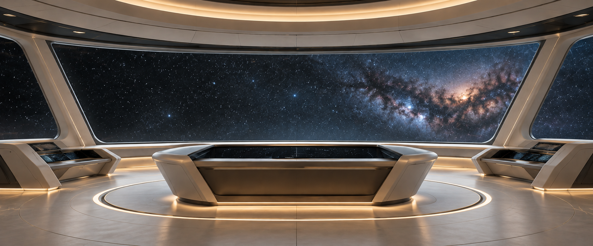

Destinations
- 300 BCEPataliputra, Mauryan India
- 750 CEChang’an, Tang China
- 1000 CEKilwa Kisiwani, Swahili Coast
- 1150 CEAngkor Wat, Khmer Empire
- 1305 CEMali Empire, West Africa
- 1450 CEGreat Zimbabwe, Southern Africa
- 1491 CECusco, Inca Empire, Peru
- 1500 CELenape community, Philadelphia region
- 1550 CEVijayanagara, South India
- 1967 CEAccra, Ghana
- 2010 CETokyo, Japan
- 2400 CEPhiladelphiaSpeculative future · not a historical reconstruction or a prediction
Behind the Investigation: Research Note
Behind the Investigation explains the generative AI capabilities, technologies, and design decisions demonstrated by each Institute investigation.
- Capability
- Historical synthesis & visual storytelling. Each destination combines historical sources with AI-assisted imagery to suggest everyday life in a place and time. The twelve scenes are viewed from one starship so they can be compared side by side.
- Prompt engineering method
- Grounded prompting.
Grounded prompting uses trustworthy historical sources to constrain reconstruction. Generated details still require verification.
Each destination separates documented evidence from artistic interpretation. Philadelphia 2400 CE is a speculative future. It is neither a historical reconstruction nor a prediction.
- Construction workflow
- One-shot AI-assisted website development. This site was assembled from a single written brief, the twelve completed destination microsites, and the supplied artwork.
- How this site runs
No live AI model runs in this experience. The destination artwork is a set of static, previously generated images. The starfield is a deterministic canvas animation. The year menu, arrows, Explore action, and sound toggle are ordinary browser controls and scripts.
The ambient sound is one pre-mixed MP3 made from two supplied audio tracks, softened and layered offline.
- Limitations
- The panoramic display is much wider than most artworks, so each image fills the display by cropping and slowly panning. Images are shown in full inside each destination.